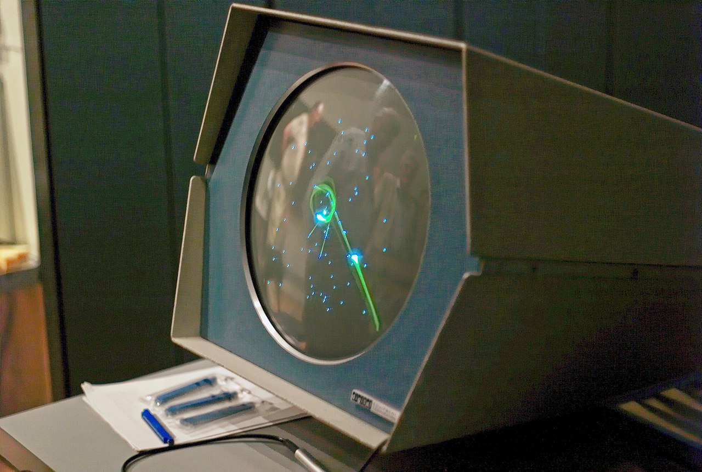
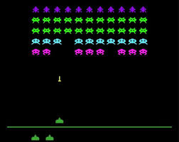
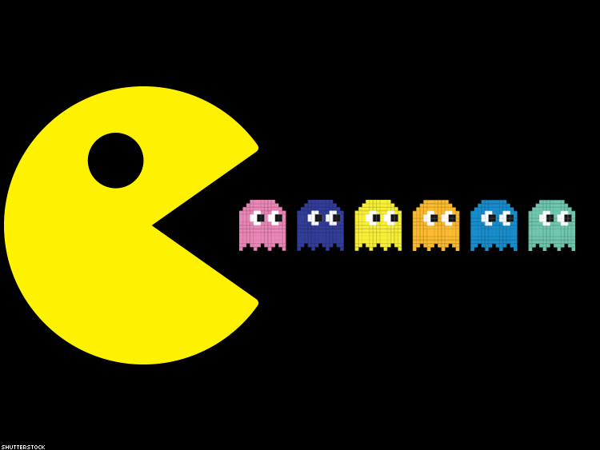

SpaceWar! La ou tout à commencer
En 1962, un groupe d’étudiants du MIT mené par Steve Russell programme un jeu nommé Spacewar! sur un PDP-1, le premier mini-ordinateur de la société DEC15. Le but n’était pas de créer un jeu en lui-même, mais d’expérimenter les possibilités du nouvel ordinateur. Spacewar! met en scène deux vaisseaux spatiaux, chacun contrôlé par un joueur à l’aide de manettes créés pour l’occasion, capables de tirer des missiles ; au centre de l’écran, une étoile crée un champ gravitationnel et un danger supplémentaire. Ce jeu, à la différence des précédentes tentatives, fut rapidement distribué avec les nouveaux ordinateurs de DEC et s’échangea à travers les prémices d’Internet. On considère qu’il s’agit du premier jeu vidéo largement diffusé et ayant eu une réelle influence. Techniquement, le jeu pesait 9 ko et tournait à 200 000 instructions par seconde.
L'industrie du jeu d'arcade entre dans un âge d'or en 1978 avec la sortie de Space Invaders de Taito. Le jeu connaît un tel succès qu'il convainc des dizaines de constructeurs de pénétrer le marché en produisant leurs propres jeux vidéo. Les premiers jeux d'arcade à succès en couleurs apparaissent en 1979. En 1979, Atari publie Asteroids, son plus grand succès commercial. Parmi les autres classiques de cette époque, on peut citer Lunar Lander, Night Driver, Missile Command, Berzerk, Breakout ou Battlezone
Space invaders est publié sur borne d’arcade en 1980 et devient le jeu le plus populaire du moment. 100 000 machines sont vendues aux États-Unis.
Sur console, Space Invaders est la plus grosse vente de l'année sur Atari 2600. Nintendo met sur le marché un jeu électronique portable avec un écran à cristaux liquides, la Game and Watch, ancêtre des consoles portables.
Ken et Roberta Williams lancent Mystery House sur Apple II, le premier jeu d'aventure graphique : la description du lieu courant n’est plus seulement basée sur un texte, mais sur l’affichage d’une image (une ligne trace un profil) à l’écran. Ils enchaîneront les séries à succès comme King’s Quest, Space Quest, Leisure Suit Larry, etc. Pendant ce temps Infocom continue de produire des jeux d’aventure textuels de grande qualité, mais perd peu à peu son public[réf. nécessaire]. À la fin de la décennie, LucasArts entre en jeu et prend la relève avec Maniac Mansion et Zak McKracken and the Alien Mindbenders, introduisant un nouveau mode de jeu qui se libère du clavier pour privilégier l’utilisation de la souris.
Le chiffre d’affaires des sociétés de jeux vidéo atteint cinq milliards de dollars aux États-Unis en 1981. La même année, Shigeru Miyamoto est chargé d’améliorer Radar Scope, un jeu d’arcade de Nintendo qui ne se vendait pas bien sur le marché américain. Au lieu de ça, Miyamoto décide de faire un autre jeu : Donkey Kong, qui est instantanément un succès.
En 1982, Coleco publie le Colecovision une console à base de cartouches. Nintendo lui confie la licence de Donkey Kong. Midway publie Ms. Pac-Man, Namco et Super Pac-Man cette année.
La même année, General Consumer Electronics publie la console Vectrex qui propose des graphismes vectoriels. Commodore commercialise l'ordinateur personnel Commodore 64 et utilise une stratégie de vente très agressive. Sinclair Research commercialise au Royaume-Uni le ZX Spectrum qui devient le rival du Commodore 64 en Europe.
L'apogée
En 1983, Nintendo, société japonaise qui s’est fait un nom dans les cartes à jouer et le domaine des jeux, sort la Family Computer (Famicom), console de jeux vidéo individuelle. Son démarrage est lent, mais les jeux proposés font augmenter la demande. La console, affichant 50 couleurs sur un écran de résolution 256 x 240, est de technologie avancée à un prix peu élevé, modèle que gardera la société par la suite.
Le même jour, l'entreprise concurrente Sega sort la console SG-1000 et l'ordinateur SC-3000, puis en 1984 la SG-1000 II. En 1985, sort la Sega Mark III (Master System), elle ne dépassera jamais les 11 % de parts de marché. En effet, la Family Computer (Nintendo Entertainment System) est pratiquement seule à chaque lancement et bénéficie de l’appui massif des éditeurs tiers. Les jeux vidéo sortent de la crise, grâce à une production et une innovation qui font augmenter la demande.
Les icônes Mario, Donkey Kong, Metroid, The Legend of Zelda, Dragon Quest tirent la machine vers le haut. La NES se vendra à plus de 60 millions d’exemplaires jusqu’en 1990. En 1989, Nintendo sort la Game Boy, premier grand succès commercial pour une console qui soit à la fois portable, et multi jeux.
Début 1990, le marché des consoles est encore dominé par Nintendo et sa Famicom, opposée à la Master System de Sega. Mais Nintendo possède encore le soutien des éditeurs. En 1990, les ventes de Nintendo s'envolent grâce à Super Mario Bros. 3. Et ce n'est pas le seul hit d'une machine qui perfore les records de ventes. Cet emblème de la remontée des ventes de jeux vidéo encourage SNK à sortir les deux versions de la Neo-Geo (Neo-Geo AES, Neo-Geo MVS), console et arcade. Mais les échecs chez les constructeurs sont nombreux, l'échec commercial du CD-i de Philips en est un parfait exemple. Pour contrer Nintendo, Sega développe la Mega Drive, une console très puissante pour l'époque, et lui crée une mascotte, Sonic.
En 1991, Nintendo sort la Super Nintendo. Sa sortie tardive est compensée par la tactique du constructeur : seuls les jeux font vendre la console. Sortie du premier jeu de combat à succès, Street Fighter II de Capcom. Super Mario Kart, Final Fantasy VI, Super Metroid, Super Mario World vont contribuer aux ventes de la console grâce à des graphismes considérés comme supérieurs à la Mega Drive. Ceux-ci ne feront qu'augmenter durant la vie de la console pour atteindre des sommets en 1994 avec Donkey Kong Country de Rare.
Année 2000
En 2000, Sony lance la PlayStation 2. Forte de la popularité de son prédécesseur, la console se fait très vite une réputation grâce à sa puissance et sa ludothèque riche et variée comprenant de nombreuses exclusivités. Leader de sa génération, la PlayStation 2 est aussi la console de salon la plus vendue de l'histoire avec plus de 150 millions d'unités écoulées à travers le monde30. Les Sims sort en février de la même année, et est un jeu de simulation qui connait un franc succès. Le titre Counter Strike sort aussi cette année là, et il restera longtemps le jeu le plus joué en ligne.
En 2001, Microsoft entre sur le marché des jeux vidéo sur console en lançant la Xbox aux États-Unis. Nintendo sort deux consoles cette année là, la GameCube au Japon et aux États-Unis et la Game Boy Advance, successeur de la Game Boy et rétrocompatible avec le catalogue de sa devancière. Sega fait le contraire en arrêtant la production de la Dreamcast et annonce son retrait du marché du hardware console.
En octobre 2001, la sortie de Grand Theft Auto III fait sensation. Le jeu d'action se distingue par la liberté d'action proposée et son anticonformisme, parfois sujet à controverse. Le titre connaît un succès fulgurant qui va croitre avec les épisodes suivants.
En 2002, la Xbox sort au Japon, puis en Europe. La GameCube sort deux mois plus tard en Europe.
Nokia sort la N-Gage en 2003, un téléphone mobile incluant des fonctionnalités de console de jeu. Nintendo sort la Game Boy Advance SP. L'entreprise 3DO dépose le bilan tandis qu'Infogrames rachète le nom de la marque Atari et Square fusionne avec Enix pour devenir Square Enix le 1er avril 2003.
L'année 2004 voit Nintendo sortir la DS au Japon et aux États-Unis23. La même année, Sony sort la PSP au Japon, un échec face à la Nintendo DS malgré des caractéristiques techniques supérieures23. Le célèbre MMORPG World of Warcraft sort aux États-Unis le 23 novembre. La société Acclaim dépose le bilan.
En 2005, Nintendo sort la DS en Europe ainsi que le successeur de la Game Boy Advance SP, la Game Boy Micro. Microsoft sort la Xbox 360 cette année là.
Titus Interactive et Interplay sont liquidés par le tribunal de commerce tandis qu'Electronic Arts acquiert 19,9 % du capital d'Ubisoft et en devient l'actionnaire majoritaire.
Nintendo lance en fin d'année 2006 la Wii partout dans le monde ainsi que la DS Lite en Europe. Sony lance la PlayStation 3 en Amérique et au Japon.
La PlayStation 3 sort le 23 mars 2007 en Europe. Sony sort aussi la PSP Slim and Lite en Europe cette année là.
L’édition 2007 de l'E3 change de formule pour être réservé aux professionnels. Le 2 décembre 2007, Vivendi Games annonce l’acquisition de la société Activision, faisant du nouvel ensemble Activision Blizzard le premier éditeur tiers mondial de jeux vidéo.
Nintendo sort la Nintendo DSi en 2008 au Japon. La firme fait, de plus, des bénéfices records malgré la crise économique. Le prix de la Xbox 360 baisse. Sony sort le modèle PSP-3000. Le jeu Grand Theft Auto IV sort en 2008 après des mois de médiatisation. Le jeu fait débuter une nouvelle controverse autour du jeu vidéo.
En 2009, Nintendo sort la Nintendo DSi en Amérique du Nord et en Europe. Square Enix rachète Eidos et Sony annonce la PSP GO et l’officialise lors du salon de l’E3. À cette occasion, Microsoft dévoile le Projet Natal, nouveau support permettant de jouer et de commander la console Xbox 360 sans aucun périphérique, grâce au mouvement du corps et à la voix. Le développement de ce projet se voit clairement être une réponse à Nintendo et sa Wii.
En juillet 2009, après 48 heures de commercialisation au Japon, le très célèbre Dragon Quest IX a été vendu à près de 2,3 millions d’exemplaires. En août de cette même année, Sony confirme la PS3 Slim qui était alors à l’état de rumeur avancée.
2010 en montant
Les années 2010 connaissent, parallèlement aux grosses productions, l’émergence du jeu vidéo indépendant qui s'affirme sur le marché avec de gros succès. Le marché se divise en deux catégories ; les gros studios produisant des jeux très médiatisés et commercialisés à grande échelle et les jeux indépendants, popularisés entre autres par la plate-forme Steam, mais qui se démocratisent également sur les consoles de jeux. Ceci se fait au détriment de studios de classe moyenne, comme THQ, qui fait faillite en 2012. En outre, le développement du financement participatif depuis le milieu des années 2000 permet aussi bien à de grandes qu'à de petites structures de concevoir des jeux sans nécessiter du soutien d'un éditeur tiers. Ces années voient également l'émergence de vidéastes comme PewDiePie qui testent et commentent les jeux vidéo sur le site de partage YouTube. En 2010, Nintendo annonce la console Nintendo 3DS et sort la Nintendo DSi XL. Sony annonce le PlayStation Move, nouveau contrôleur à détection de mouvement pour la PlayStation 3 tandis que Microsoft lance la Xbox 360 Slim, version plus fine de la Xbox 360 et utilisant les mêmes jeux. Microsoft annonce le Projet Natal renommé Kinect (interaction animée haptique humain-écran). Nintendo sort la Nintendo 3DS en 2011 en jeu vidéo et annonce la Wii U ainsi qu'un accessoire pour la Nintendo 3DS permettant de jouer avec 2 sticks. Sony sort cette année la PlayStation Vita, première console portable avec 2 sticks. Nintendo baisse le prix de la Nintendo 3DS. Fin juillet 2012 Nintendo sort la Nintendo 3DS XL et la Wii U quelques jours avant Noël 2012. Cette même année, Sony sort la PlayStation Vita et Square Enix présente un moteur graphique le Luminous Engine avec sa démo technique Agni's Philosophy, un avant-gout des capacités des consoles nouvelle génération. Call of Duty: Black Ops II marque un record avec 1 milliard de dollars de chiffre d'affaires en 15 jours. Sony sort la PlayStation 3, version slim, plus petite que les anciennes versions. Fin 2013 sortent les consoles de Sony et Microsoft, respectivement la PlayStation 4 et la Xbox One. Avant même leur adaptation sur ces consoles, le jeu Grand Theft Auto V dépasse le milliard de dollars de recettes 3 jours après sa sortie le 17 septembre 2013, sur les plates-formes Xbox 360 et PlayStation 331. En 2014, la saison 3 du championnat de League Of Legends bat un nouveau record avec 32 millions de spectateurs au total. Cette année voit la sortie de FIFA 15 (EA Games), qui atteint les 1,3 million de ventes. Le jeu d'arène de bataille en ligne multijoueur Dota 2 atteint les 10 millions de joueurs et Minecraft plus de 100 millions. La New Nintendo 3DS sort en Europe en 2015 ainsi que la PlayStation 4 et la PlayStation Vita en Chine. Le PDG de Nintendo Co. Ltd, Satoru Iwata décède la même année.